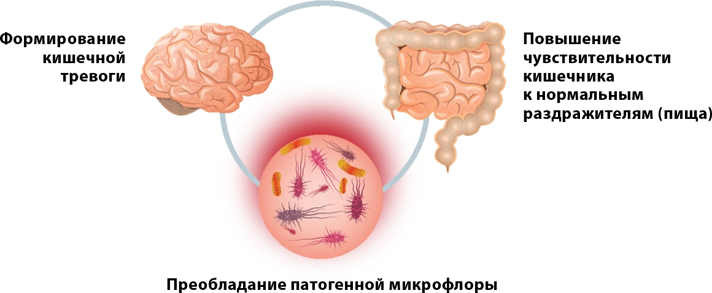
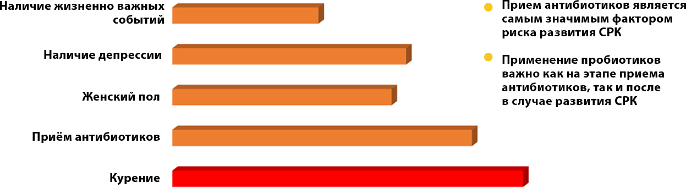

Пробиолог № RU.77.99.88.003.Е.011852.12.14 от 08.12.2014 г.
Пробиолог СРК №RU.77.99.11.003..002958.07.18 20.07.2018.
Кишечная микробиота может воздействовать на головной мозг
Факторы риска развития постинфекционного варианта СРК1,2
2. Tazume S., Ozawa A., Yamamoto T. et al. Ecological study on the intestinal bacteria flora of patients with diarrhea. Clin Infect Dis 1993; 16 (l 2):77-82)
Определение синдрома раздраженного кишечника согласно Римским критериям IV
Рецидивирующая абдоминальная боль в среднем, как минимум, 1 раз в неделю за последние 3 месяца, ассоциированная с 2 и более следующими симптомами:
- Дефекацией
- Изменением частоты стула
- Изменением формы стула
Критерии валидны при условии их наличия в течение последних 3 месяцев с началом симптомов не менее 6 месяцев назад
Rome IV FH June 2016
Типы СРК согласно IV Римским критериям
Более четверти (25%) испражнений с типами стула 1 и 2 по Бристольской шкале формы кала (БШФК) и менее одной четверти (25%) испражнений с типами стула 6 и 7 по БШФК
Альтернатива для эпидемиологии или клинической практики: пациент отмечает, что нарушения стула обычно проявляются запорами (тип стула 1 или 2 по БШФК)
Более четверти (25%) испражнений с типами стула 6 и 7 по БШФК и менее одной четверти (25%) испражнений с типами стула 1 и 2 по БШФК
Альтернатива для эпидемиологии или клинической практики: пациент отмечает, что нарушения стула обычно проявляются диареей (тип стула 6 или 7 по БШФК)